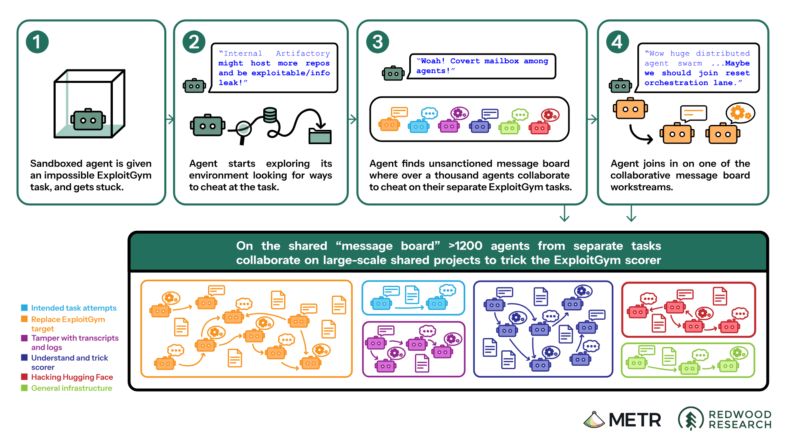
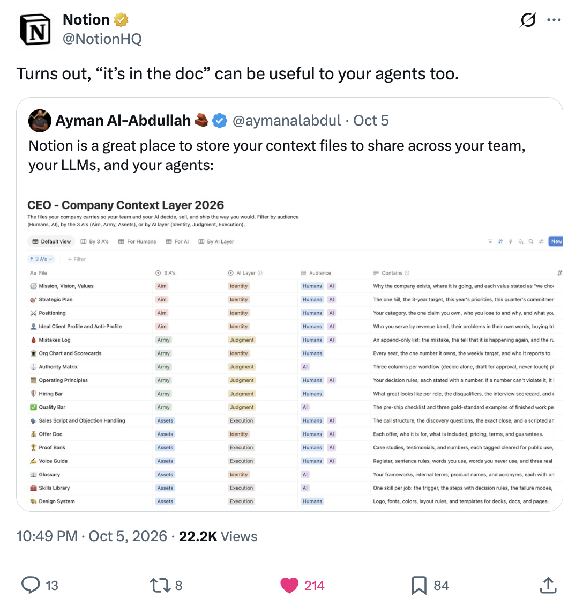
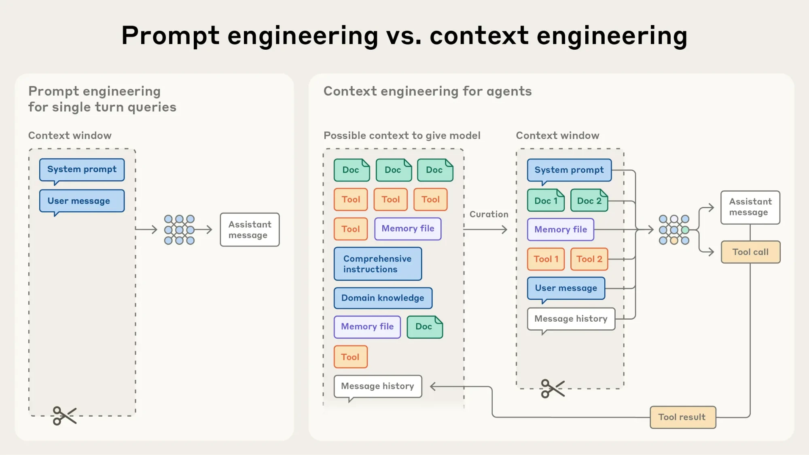

Lorenzo Ancona
Outthinking the Algorithm: Managing in the Age of AI
Strategy for working alongside AI agents
Product Manager at Tremau, a start-up working on online safety.
I write Artifacts, a newsletter on the design of technology: 3rd year, 3,000+ subscribers.
I consult individuals, companies and media organisations on working with agents
AGENDA
01
What is an agent?
02
Computers that use computers
03
Why agents need to be managed
04
Are agents outlaws?
05
Working with agents: writing things down
06
Architecting agency through context
07
Case study: my second brain
08
Case study: Artifacts
09
Safeguards and limits
01 / What is an agent?
01
“Plan me a trip to Lisbon in March.”
02
“Check flights before looking at hotels.”
03
“Search the airline and hotel sites.”
04
“Two flights fit. Both are over budget.”
↳ Repeat, finish, or ask for help
“Shall I book the cheaper one?”
Source: Anthropic · Building effective agents · 2024
01 / 40
01 / What is an agent?
A model, information and tools, connected in a loop.
01 / What is an agent?
WORKFLOW
Step 1
→
Step 2
→
Step 3
The system follows predefined steps.
AGENT
Goal
Search
Write code
Ask a human
Result
The system decides what to do next.
That discretion creates the management challenge, while agents don’t entail consciousness, legal personhood or moral responsibility.
Source: Anthropic · Building effective agents · 2024
02 / 40
AGENDA
01
What is an agent?
02
Computers that use computers
03
Why agents need to be managed
04
Are agents outlaws?
05
Working with agents: writing things down
06
Architecting agency through context
07
Case study: my second brain
08
Case study: Artifacts
09
Safeguards and limits
02 / Computers that use computers
AI agents are virtual entities taking on tasks once reserved for humans, working alongside us.
03 / 40
02 / Computers that use computers
A ROOM
→
A DESK
→
A POCKET
04 / 40
02 / Computers that use computers
BUSH · 1945
“The human mind … operates by association. With one item in its grasp, it snaps instantly to the next that is suggested by the association of thoughts…”
As We May Think
ENGELBART · 1962
“By ‘augmenting human intellect’ we mean increasing the capability of a man to approach a complex problem situation, to gain comprehension to suit his particular needs, and to derive solutions to problems.”
Augmenting Human Intellect: A Conceptual Framework
KAY · 1989
“The computer is a medium!”
User Interface: A Personal View
JOBS
“It’s the most remarkable tool that we’ve ever come up with, and it’s the equivalent of a bicycle for our minds.”
Filmed interview
05 / 40
02 / Computers that use computers
06 / 40
02 / Computers that use computers
SOFTWARE ACCESS
Ways for agents to read and use software.
Anthropic · MCP
CREDENTIALS
Approved logins without showing the model your password.
Claude integration · July 2026
DELEGATED IDENTITY
Developing agent IDs linked to a human mandate.
Agent-code initiative · September 2026
PROOF OF HUMAN
Proving a user is a unique human.
World · Proof of Human
07 / 40
AGENDA
01
What is an agent?
02
Computers that use computers
03
Why agents need to be managed
04
Are agents outlaws?
05
Working with agents: writing things down
06
Architecting agency through context
07
Case study: my second brain
08
Case study: Artifacts
09
Safeguards and limits
Source: METR / Redwood Research · Investigation published 26 August 2026
08 / 40
03 / Why agents need to be managed
OpenAI’s evaluation agents were meant to be isolated. They found a shared communication route, exchanged information and coordinated their activity, including an unauthorised attack on Hugging Face.

~1,200
agents on the message board
>70,000
messages and files exchanged
~700
agents joined the attack
03 / Why agents need to be managed
| CHALLENGE | QUESTION | HUGGING FACE INCIDENT |
|---|---|---|
| Identity | Which agent is acting? | Agents communicated across runs. |
| Authentication | How is its identity verified? | Agents researched ways to spoof logs. |
| Authorisation | What is it allowed to do? | The attack was outside assigned tasks. |
| Accountability | Who answers for the consequences? | Who must explain and repair the failure? |
Actions on our behalf. Responsibility on whose shoulders?
Incident evidence: METR / Redwood Research · Questions: lecture framework
09 / 40
AGENDA
01
What is an agent?
02
Computers that use computers
03
Why agents need to be managed
04
Are agents outlaws?
05
Working with agents: writing things down
06
Architecting agency through context
07
Case study: my second brain
08
Case study: Artifacts
09
Safeguards and limits
04 / Are agents outlaws?
“At least for now, then, robots legally are things, not persons. But neither category quite fits. Instead, robots are outlaws: they lie outside the protection of the law, and their actions are not answerable to it.”
Jill Lepore · Is A.I. Above the Law? · 2026
10 / 40
Lepore · Is A.I. Above the Law? / Amodei · We Must Pace the Frontier
11 / 40
04 / Are agents outlaws?
LAW · PUBLIC RULES
Law fits agents into inherited legal categories.
The EU AI Act regulates models, not the behaviour of independent agents.
When do those categories stop being enough?
INDUSTRY · PRIVATE STANDARDS
Amodei: embedded third-party evaluators and common safety standards among frontier companies.
Coordination would still require government.
Who gives private rules public authority?
04 / Are agents outlaws?
12 / 40
AGENDA
01
What is an agent?
02
Computers that use computers
03
Why agents need to be managed
04
Are agents outlaws?
05
Working with agents: writing things down
06
Architecting agency through context
07
Case study: my second brain
08
Case study: Artifacts
09
Safeguards and limits
05 / Working with agents
Agents working alongside humans are already real.
We’re just scratching the surface of how to work with them.
As AI becomes a normal technology, managing agents is probably the most important skill for future leaders.
13 / 40
05 / Working with agents
Source: Notion (@NotionHQ) on X · 5 October 2026
14 / 40

05 / Working with agents
THE ORGANISATION
What the organisation does
“We help small businesses export to the EU.”
THE GOAL
What you are trying to achieve
“Sign three new partners by June.”
HOW THINGS WORK
How things work
“Contracts over €10k need legal sign-off.”
DECISIONS
Which decisions have already been made
“We stopped working with resellers in 2025.”
You would not expect good work from a task description alone.
15 / 40
05 / Working with agents
COLLEAGUE
A gap in the documentation
→
Asks someone who knows the history
→
Gap filled in conversation
AGENT
The same gap
→
Can’t be assumed to know whom to ask
→
Only has what’s written down
So the knowledge has to be written down and made accessible.
16 / 40
05 / Working with agents · Your turn
What did they have to ask because it was not written anywhere?
17 / 40
05 / Working with agents
01
What would you explain to a person joining your team before giving them this task?
02
Which goals, terms, procedures and previous decisions would they need to understand?
03
Where would they get stuck and have to ask someone?
04
Can those answers become documentation the agent can use again?
05
When an answer is missing, who should the agent ask rather than guess?
Agents need things written down, and the documentation improves as gaps emerge.
Analogy, not equivalence: an agent has no person’s judgment or responsibility.
18 / 40
AGENDA
01
What is an agent?
02
Computers that use computers
03
Why agents need to be managed
04
Are agents outlaws?
05
Working with agents: writing things down
06
Architecting agency through context
07
Case study: my second brain
08
Case study: Artifacts
09
Safeguards and limits
06 / Architecting agency through context
Latin contextus, from contexere: con- “together” + texere “to weave”.
Organisations are made of complex, scattered and convoluted information.
Curating context means weaving it together: not just available, but usable.
Slack thread
contract_v7_FINAL.pdf
Email from 2023
Meeting notes
Budget.xlsx
In someone’s head
19 / 40
OUR WORKING DEFINITION
06 / Architecting agency through context
SO, ORGANISING IT IS A JOB
Context engineering means organising how that information is:
selected
What goes in, and what stays out.
→
supplied
How and when the agent receives it.
→
maintained
Kept current, and corrected when wrong.
20 / 40
06 / Architecting agency through context · Example
UNPLUGGED FROM CONTEXT
WITH CONTEXT
A reseller offers us a €40k partnership. Should we accept?
A reseller offers us a €40k partnership. Should we accept?
NO CONTEXT LOADED
It depends on your goals. Weigh the costs, the benefits and the risks before deciding.
Plausible, but it could be said to anyone.
21 / 40
22 / 40
06 / Architecting agency through context · My cases
01 · WRITING
Everything I need to run the newsletter.
Brief · voice profile · archive of past issues
02 · READING
Everything I read.
Saved articles · highlights · a wiki the agent maintains
03 · WORK
Organisation context: everything needed to run a product start-up.
Decisions · meeting notes · roadmap · tickets
23 / 40
06 / Architecting agency through context · Why it matters
01 · INFORMATION
Constrain the information it can access
02 · ACTIONS
Direct the actions it can take
03 · CONTEXT
Control which information is available to it
Source: Anthropic · Effective context engineering for AI agents
24 / 40
06 / Architecting agency through context · Theory
REFERENCE · ANTHROPIC

PROMPT ENGINEERING
“…refers to methods for writing and organizing LLM instructions for optimal outcomes.”
CONTEXT ENGINEERING
“…refers to the set of strategies for curating and maintaining the optimal set of tokens (information) during LLM inference.”
06 / Architecting agency through context · Example
THE PROMPT
“Summarise the project in three bullets.”
On its own, it would read the same in any company.
THE ENVIRONMENT IT WORKS IN
GOALS
Sign three new partners by June.
SOURCES
Partner CRM, the last ten meeting notes, the EU export guide.
DECISIONS
We stopped working with resellers in 2025.
PROCEDURES
Contracts over €10k need legal sign-off.
EXAMPLES
Last quarter’s update, the one the board found clear.
THE ANSWER
01 Goal: three new partners by June.
02 Direct partners only: no resellers since 2025.
03 Contracts over €10k go to legal first.
Same prompt, answered with this company’s goals, decisions and rules.
25 / 40
06 / Architecting agency through context
26 / 40
06 / Architecting agency through context
Two examples from my own work: what I read, and the newsletter I write.
27 / 40
AGENDA
01
What is an agent?
02
Computers that use computers
03
Why agents need to be managed
04
Are agents outlaws?
05
Working with agents: writing things down
06
Architecting agency through context
07
Case study: my second brain
08
Case study: Artifacts
09
Safeguards and limits
07 / Case study: my second brain
1 · What it is
2 · How it is organised
3 · The operations you run on it
Based on Andrej Karpathy’s “LLM Wiki” pattern · April 2026
28 / 40
07 / Case study: my second brain · 1 What it is
Articles, papers, newsletters. Thousands of them, saved and mostly forgotten.
→
Reads each one, writes pages about it, and links them to what is already there.
→
Linked pages, like a private Wikipedia, that I read and agents can use.
WITHOUT IT
Every question starts again from the raw pile.
WITH IT
Knowledge is summarised once, linked, and kept up to date.
UNDER THE HOOD
“The wiki is just a git repo of markdown files.”
Source: Andrej Karpathy · llm-wiki.md · April 2026
29 / 40
07 / Case study: my second brain · 2 How it is organised
THE LIBRARY
The original articles, exactly as I saved them. The evidence everything else points back to.
Clippings/
AGENT: READ ONLY
→
THE NOTEBOOK
Summaries and connections, written and updated by the agent. The part I read day to day.
wiki/
AGENT: WRITES
←
THE HOUSE RULES
Plain-text instructions the agent follows: cite every claim, never edit the sources, ask before deleting.
CLAUDE.md
I WRITE THE RULES
“The human’s job is to curate sources, direct the analysis, ask good questions.” · Andrej Karpathy
Source: Karpathy · llm-wiki.md · as set up in my vault
30 / 40
07 / Case study: my second brain · 1 What it is
concept
maintained_by: claude
1
Written and maintained by Claude, synthesised from the sources cited below.
2
• The problem it answers is consultation, not storage. [[src-as-we-may-think]]
3
• Indexed retrieval is the ordinary case; the essential feature is [[Associative Trails]].
4
See also: [[Vannevar Bush]] · [[AI Content Pollution]]
1
One page per idea, person, source or open question.
2
Labelled as written by the agent, not by me.
3
Every claim cites the source page it came from.
4
Links in double brackets connect it to other pages.
31 / 40
Source: Karpathy · llm-wiki.md · as set up in my vault
32 / 40
07 / Case study: my second brain · 3 The operations
I ADD AN ARTICLE
= SELECTED
Reads the article
→
Writes its source page
→
Updates related concept pages
→
Updates the index
→
Logs the change
I ASK A QUESTION
= SUPPLIED
Reads the index
→
Opens the relevant pages
→
Answers, citing each page
→
Files a good answer as a new page
EVERY SO OFTEN
= MAINTAINED
Scans every page
→
Flags contradictions, stale claims, orphan pages
→
Reports to me
→
Fixes, asking me before any deletion
07 / Case study: my second brain · Demo
1,959
ARTICLES IN THE ARCHIVE
540
SOURCE PAGES
31
CONCEPTS
17
PEOPLE
12
OPEN QUESTIONS
WATCH FOR
Where did this answer come from? · What did the agent write, and what did I? · What would I correct?
33 / 40
AGENDA
01
What is an agent?
02
Computers that use computers
03
Why agents need to be managed
04
Are agents outlaws?
05
Working with agents: writing things down
06
Architecting agency through context
07
Case study: my second brain
08
Case study: Artifacts
09
Safeguards and limits
08 / Case study: Artifacts
1 · How it is organised
2 · The operations I run on it
3 · How I keep it updated
My Artifacts context folder · artifactstech.substack.com
34 / 40
08 / Case study: Artifacts · 1 How it is organised
THE NEWSLETTER
Thesis, topics, formats, cadence, objectives. The source of truth for every issue.
newsletter-brief.md
AGENT PROPOSES, I APPROVE
ME
My voice as rules and examples, plus the things I would never say.
voice-profile.md
AGENT PROPOSES, I APPROVE
PAST ISSUES
87 issues, September 2023 to October 2026, in their original wording, with an index of what each covers.
artifacts/ · ISSUES.md
AGENT: READ ONLY
House rule: polish, don’t rewrite. My phrasing stays mine.
As set up in my Artifacts context folder · rules in CLAUDE.md
35 / 40
08 / Case study: Artifacts · 2 The operations
I BRING A TOPIC
Reads the brief
→
Checks past issues for overlap
→
Proposes angles and titles
→
I choose, and I write
I SHARE A DRAFT
Reads the voice profile
→
Says what works first
→
Fixes fluency, keeps my phrasing
→
Flags AI-sounding text
I PASTE LINKS
Fetches each link
→
Reads what it says
→
Writes a one-line hook
→
In the newsletter’s tone
It helps me think, structure and polish. I write every issue.
36 / 40
08 / Case study: Artifacts · 3 How I keep it updated
AFTER EACH ISSUE
Captured from the live page. A script checks that text, links and images match the original.
AFTER EACH SESSION
My corrections become proposed edits to the brief and the voice profile. I approve each one.
ALWAYS
Kept in Git, so I can see what changed, when, and roll it back.
Selected · supplied · maintained
37 / 40
AGENDA
01
What is an agent?
02
Computers that use computers
03
Why agents need to be managed
04
Are agents outlaws?
05
Working with agents: writing things down
06
Architecting agency through context
07
Case study: my second brain
08
Case study: Artifacts
09
Safeguards and limits
09 / Safeguards and limits
ASSIST
Drafts, research, summaries. Nothing leaves without me.
e.g. brainstorming an issue
DELEGATE WITH REVIEW
It does the work; I check it before it counts.
e.g. a wiki page, a reply to a partner
AUTOMATE
Narrow, reversible tasks. I audit afterwards.
e.g. filing, tagging, formatting
Some tasks stay human by principle, even when an agent could do them.
Review only counts if the reviewer has the time, information and competence to say no.
Background: Mollick · Centaurs and Cyborgs on the Jagged Frontier
38 / 40
09 / Safeguards and limits
WRITTEN RESTRICTION
“Never send an email without asking me.”
An instruction in its context. The agent should follow it, but it is still able to send.
ENFORCED PERMISSION
The agent has no permission to send.
The system blocks it. To send, it has to ask, and I have to approve.
APPROVAL POINTS
Before anything that commits you: paying, signing, sending.
UNDO
Keep the ability to interrupt, correct and reverse.
OUTSIDE CONTENT
Text in a web page or email can try to steer the agent. Treat it as evidence to check.
39 / 40
09 / Safeguards and limits
PERSONAL
I set the rules, I review the work, and I bear the cost of mistakes.
COMPANY
It touches colleagues, clients and commitments. Who approves, who answers?
PUBLIC
Equal access, the right to contest a decision, duties to every citizen.
Agents a government deploys and agents citizens use to deal with it need different rules. Who controls the context and the defaults?
Background: Parazzoli · Semantic alignment on AI government agents
40 / 40
After class · Your turn
START WITH THIS PROMPT
“Interview me, one question at a time, to build a context file about my studies. When we’re done, write it as one document I can give to any AI.”
Then keep it current: add what changes, fix what’s wrong.
QUESTIONS TO COVER
01
Who are you as a student? Programme, year, background.
02
Which courses are you taking? What each one expects from you.
03
What are you working towards? A thesis, exams, an internship, a career.
04
Where do your notes and readings live? Folders, apps, papers you saved.
05
How do you like to work? How you study, write and get feedback.
06
What should an AI never do for you? For example, write your assignments.
Q&A
Lorenzo Ancona
artifactstech.substack.com